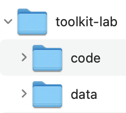
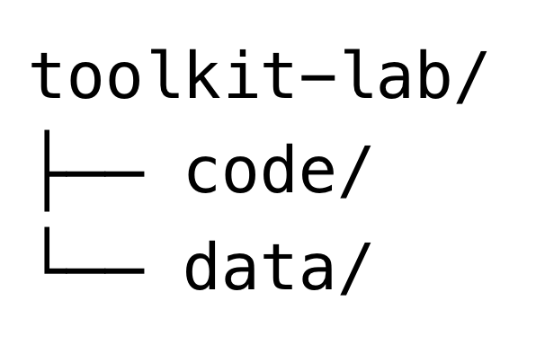
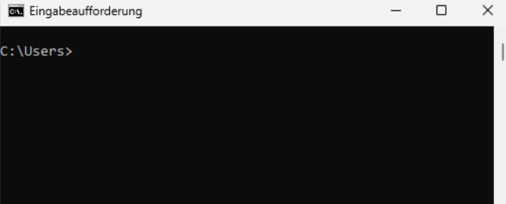
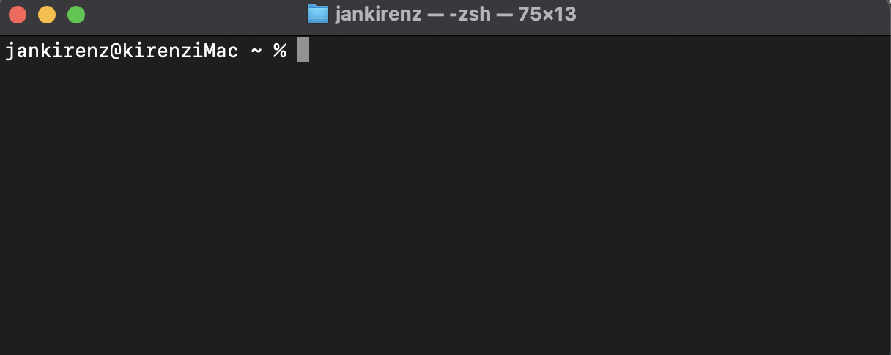

1 Projektumgebung
Das Organisieren Ihrer Dateien ist entscheidend für die Effizienz und Zugänglichkeit Ihrer Projekte. Zunächst erstellen wir daher einen Ordner namens toolkit-lab auf Ihrem Rechner und legen die Unterverzeichnisse code und data an, um Ihr Projekt strukturiert zu halten.
Diese Ordnerstruktur kann wie folgt dargestellt werden:


Für die Darstellung der Ordnerstruktur verwenden wir typischerweise eine Baumstruktur, wie in Abbildung 1.1 (b) dargestellt. Diese kann beispielsweise nach diesem Schema erzeugt werden:
toolkit-lab/
├── code/
└── data/Anstatt eine grafische Benutzeroberfläche wie den Windows-Explorer oder den macOS Finder zu verwenden, werden wir die Befehlszeile verwenden, um die Ordner einzurichten. Die Befehlszeile ist ein leistungsstarkes Werkzeug zum Einrichten Ihrer Arbeitsumgebung. Sie ermöglicht eine Kommunikation mit dem Betriebssystem über textbasierte Eingaben.
Weitere gängige Bezeichnung für die Befehlszeile sind Kommandozeile, Befehlszeilenschnittstelle, oder der englische Begriff “Command Line Interface”, oft abgekürzt mit “CLI”. In Windows ist die Bezeichnung für das entsprechende Programm Eingabeaufforderung (siehe Abbildung 1.2 (a)), auf dem Mac heißt es Terminal (siehe Abbildung 1.2 (b)).


In den nächsten Abschnitten wird erklärt, wie die Ordner mit Hilfe der Befehlszeile eingerichtet werden können.
1.1 Projektumgebung in Windows
Folgen Sie diesen Schritten, um das Hauptverzeichnis und die Unterverzeichnisse mit der Windows-Eingabeaufforderung (“Command Prompt” bzw. “cmd”) zu erstellen:
Geben Sie in dem Windows-Suchfenster
Eingabeaufforderungodercmdein und drücken SieEnter, um die Eingabeaufforderung zu öffnen.Erstellen Sie einen neuen Ordner namens
toolkit-lab(kopieren Sie diesen Code und geben Sie ihn in Ihre Eingabeaufforderung ein):mkdir toolkit-labVerwenden Sie
cd(change directory), um in das Verzeichnistoolkit-labzu wechseln:cd toolkit-labVerwenden Sie
mkdir(make directory), um die Unterverzeichnissecodeunddatazu erstellen:mkdir code data
Wir haben damit ein Hauptverzeichnis toolkit-lab mit zwei Unterverzeichnissen eingerichtet: code für Ihre Skripte und data zum Speichern von Datensätzen.
1.2 Projektumgebung auf Mac
Folgen Sie diesen Schritten, um das Hauptverzeichnis und die Unterverzeichnisse mit dem Terminal (dies ist die Bezeichnung der Befehlszeile in macOS und Linux) in macOS zu erstellen:
Um das Terminal in macOS zu öffnen, können Sie die Spotlight-Suche verwenden. Öffnen Sie diese mit der Tastenkombination
Cmd + Leertaste.Abbildung 1.3: Tastenkombination für Spotlight-Suche Geben Sie in der Spotlight-Suche “Terminal” ein und wählen Sie das Programm aus. Sie sollten nun das Terminal sehen können.
Abbildung 1.4: Terminal auf dem Mac Erklärung der Terminal-Inhalte- Benutzername: In diesem Fall
jankirenz. Es zeigt an, welcher Benutzer aktuell am System angemeldet ist. - Hostname: Hier
kirenziMac. Dies ist der Name des Computers, auf dem das Terminal läuft. - Aktuelles Verzeichnis (Pfad): Das
~(Tilde) Symbol steht für das Home-Verzeichnis des aktuellen Benutzers. Der vollständige Pfad wäre also /Users/jankirenz. Es zeigt an, in welchem Verzeichnis Sie sich gerade befinden. - Prompt: Das
%Symbol am Ende der Zeile ist der sogenannte Prompt. Er signalisiert, dass das Terminal bereit ist, einen neuen Befehl entgegenzunehmen.
- Benutzername: In diesem Fall
Zuerst verwenden wir den Befehl pwd (“print working directory”) und drücken die Eingabetaste, um den vollständigen Pfad des aktuellen Verzeichnisses anzuzeigen. Wenn Sie das Terminal gerade geöffnet haben, sollte das aktuelle Verzeichnis Ihr Home-Verzeichnis sein (in meinem Fall
/Users/jankirenz, da mein Benutzerkonto jankirenz heißt):pwdErstellen Sie nun einen neuen Ordner namens
toolkit-labin dem Home-Verzeichnis (kopieren Sie diesen Code und geben Sie ihn in Ihr Terminal ein):mkdir toolkit-labVerwenden Sie
cd(change directory), um in das Verzeichnistoolkit-labzu wechseln:cd toolkit-labVerwenden Sie
mkdir(make directory), um die Unterverzeichnissecodeunddatazu erstellen:mkdir code data
{kind=link}
Wir haben damit ein Hauptverzeichnis toolkit-lab mit zwei Unterverzeichnissen eingerichtet: code für Ihre Skripte und data zum Speichern von Datensätzen.